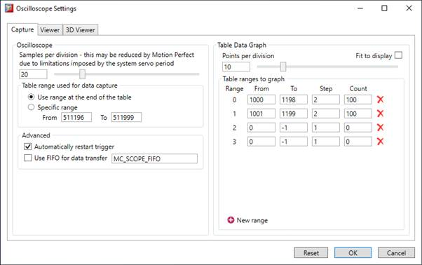
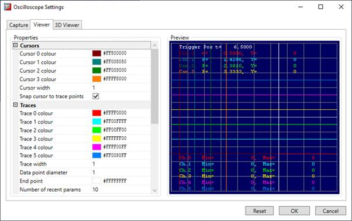
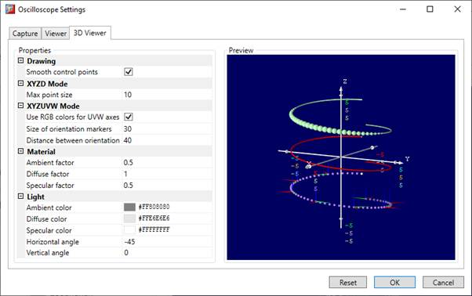

When the "Settings" button is pressed or "Settings/Settings" is selected from the oscilloscope main menu, the oscilloscope configuration dialog is displayed, as shown below. Click the mouse button over the various controls to reveal further information. It contains three main sections:
The oscilloscope defaults to recording five points per horizontal (time base) grid division. This value can be adjusted using the adjacent scrollbar.
To achieve the fastest possible sample rate it is necessary to reduce the number of samples per grid division to 1, and increase the time base scale to its fastest value (1 servo period per grid division).
It should be noted that the trace might not be plotted completely to the right hand side of the display, depending upon the time base scale and number of samples per grid division.
The controller records the required parameter data values in the controller as table data prior to uploading these values to the oscilloscope tool. By default, Motion Perfect uses a block of table values at the top of table memory. However, if this conflicts with programs running on the controller which might also require this section of the table, then the lower table value can be reset.
If the table memory is set manually the user specifies the start of the table block and the upper value is adjusted automatically depending on the space needed to capture trace data.
The oscilloscope is automatically rearmed at the end of each capture cycle when operating in manual repeat trigger mode if the controller supports this feature. This improves capturing by lowering the delay between the consecutive capture cycles.
If the controller supports this feature, the captured data is transferred between the controller and the PC using a FIFO pipe and text transfer protocol over dedicated TCP port.
This is still an experimental feature and there may be issues, in particular when SCOPE_DELAY is set to negative values.
The user can specify the number of points per division for table data display or that it is fitted to the display.
It is possible to plot controller table values directly, in which case the table limit text boxes enable the user to enter up to eight table ranges. Ranges of table data can be added or removed as required (up to the maximum of 8).
Interleaved table ranges occur when the data for more than one trace is stored with the point data grouped together as shown below:
|
TABLE address |
Trace# |
Data Point# |
|
1000 |
0 |
0 |
|
1001 |
1 |
0 |
|
1002 |
0 |
1 |
|
1003 |
1 |
1 |
|
1004 |
0 |
2 |
|
1005 |
1 |
2 |
|
… |
|
|
With this data you would set the start of range 0 to 1000, the start of range 1 to 1001 and the step for both ranges to 2. For using contiguous blocks of table for each range, step should be set to 1. See below:

If analogue inputs are being recorded, then the fastest oscilloscope resolution (sample rate) is the number of analogue channels in milliseconds ( i.e. 2 analogue inputs infers the fastest sample rate is 2msec). The resolution is calculated by dividing the time base scale value by the number of samples per grid division.
It is not possible to enter table channel values in excess of the controllers maximum TABLE size, nor to enter a lower oscilloscope table value. Increasing the samples per grid division to a value which causes the upper oscilloscope table value to exceed the controller maximum table value is also not permitted.
If the number of samples per grid division is increased, and subsequently the time base scale is set to a faster value which causes an unobtainable resolution, the oscilloscope automatically resets the number of samples per grid division.
Before the oscilloscope is triggered a sample quantization check is done to make sure that it is possible to gather the data at the sample interval requested. This may cause the number of samples per division to be adjusted so that the controller is able to gather the data at a sample period which is a whole number of servo cycles.

This allows the user to change the display parameters used by the oscilloscope including:

In 3D visualisation mode some of the settings from previous section are used like colours and thickness of visual elements. This page allows the user to change the display parameters used specific for 3D visualization mode like: